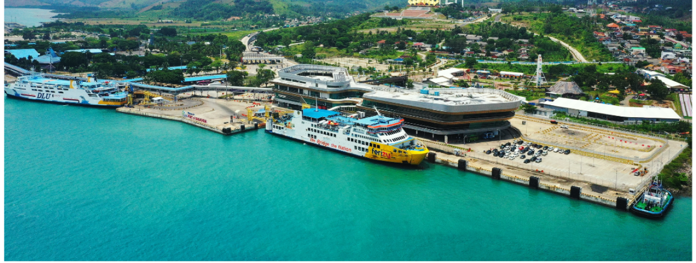
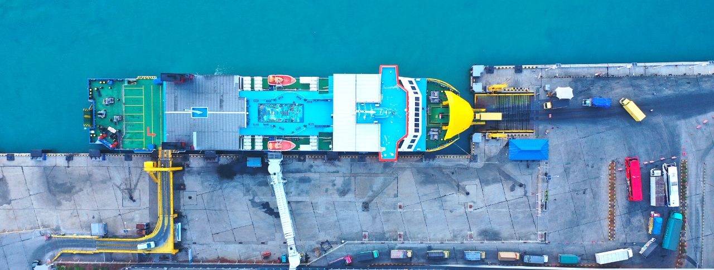

Menghubungkan pulau-pulau Indonesia melalui armada kapal ferry yang andal, pengelolaan pelabuhan modern, serta sistem pemesanan tiket digital Ferizy.
Jalur distribusi logistik dan mobilitas penumpang yang beroperasi 24 jam di koridor utama Indonesia.

Gerbang utama penghubung Pulau Jawa dan Sumatera dengan waktu tempuh 60 menit (Express) hingga 120 menit (Reguler).
Lihat Jadwal & Tarif
Akses penyeberangan Jawa Timur menuju Bali dengan frekuensi keberangkatan kapal setiap 15 menit.
Lihat Jadwal & Tarif
Melayani angkutan penumpang dan distribusi logistik antarpulau dari Bali menuju Lombok setiap hari.
Lihat Jadwal & Tarif